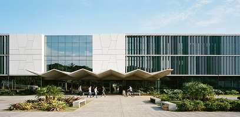
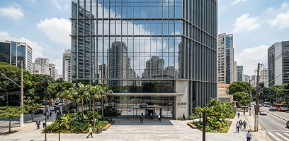
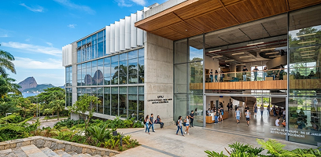

Polo principal
Centro de Belo Horizonte/MG
Reitoria, laboratórios centrais de redes e sistemas autônomos. Nossa sede institucional e hub de pesquisa aplicada.
Av. Afonso Pena, 1500 · Centro
Presença física oficial
A UISE estende sua infraestrutura de excelência acadêmica através de polos estratégicos. Projetados para aproximar laboratórios avançados e suporte presencial direto aos grandes mercados corporativos.
Conectividade física nas capitais econômicas do país

Reitoria, laboratórios centrais de redes e sistemas autônomos. Nossa sede institucional e hub de pesquisa aplicada.
Av. Afonso Pena, 1500 · Centro
Centro tecnológico no coração corporativo da capital paulista. Hub de inovação com acesso direto ao ecossistema de startups.
Av. Paulista, 1000 · Bela Vista
Unidade estratégica de inovação integrada e fomento a novas mídias e comunicações digitais de impacto.
Av. Rio Branco, 500 · Centro